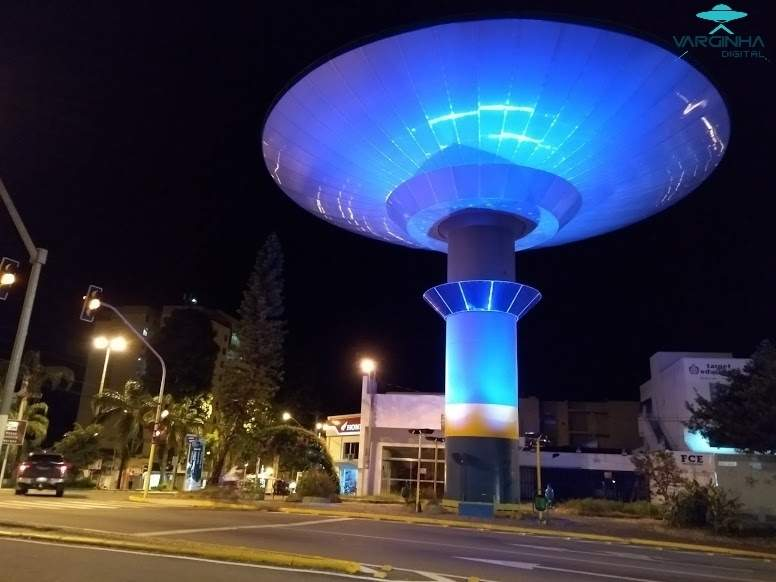
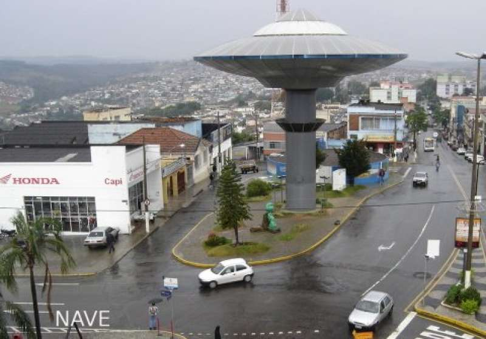
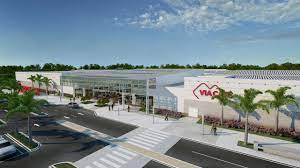
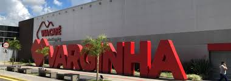

Localizado em uma área central da cidade, foi construido uma nave do ET que fica iluminada a noite.
 A Nave Espacial de Varginha é uma torre de água de 20 metros de altura com um reservatório de água em forma de disco em Varginha, Brasil, que foi construída em 2001. A Nave Espacial de Varginha é uma reminiscência do incidente de Varginha, um suposto pouso de OVNI que ocorreu em 20 de janeiro de 1996.
Local de fácil acesso pelo munícipes e demais moradores das cidades próximas. O Shopping recebe inúmeros visitantes aos finais de semana e feriados.
 Shopping coberto com lojas de roupa conhecidas, supermercado, cinema, academia, restaurante e espaços de recreação.
Varginha se desenvolveu economicamente devido a produção cafeeira. Existem várias empresas de corretagem, exportação e beneficiamento do grão.
Clique no link abaixo para ser redirecionado para o site da Minas Sul